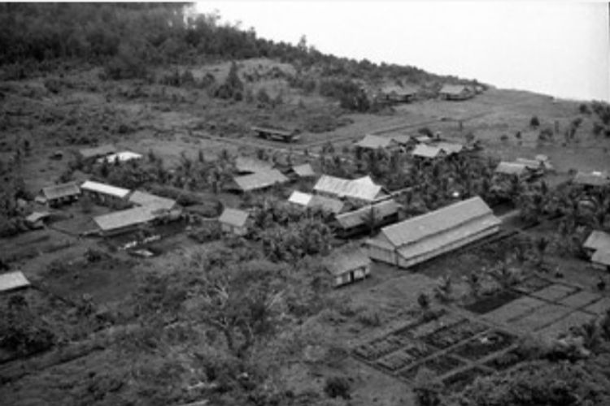
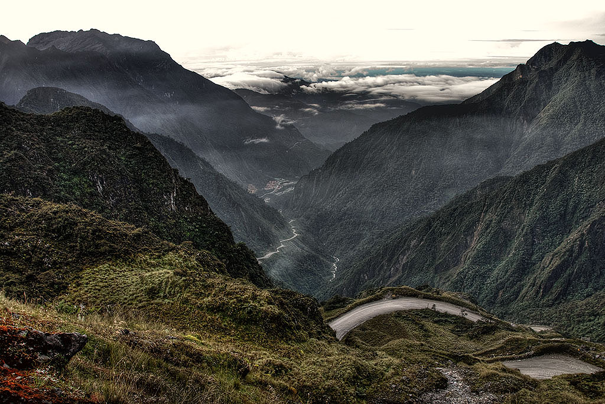
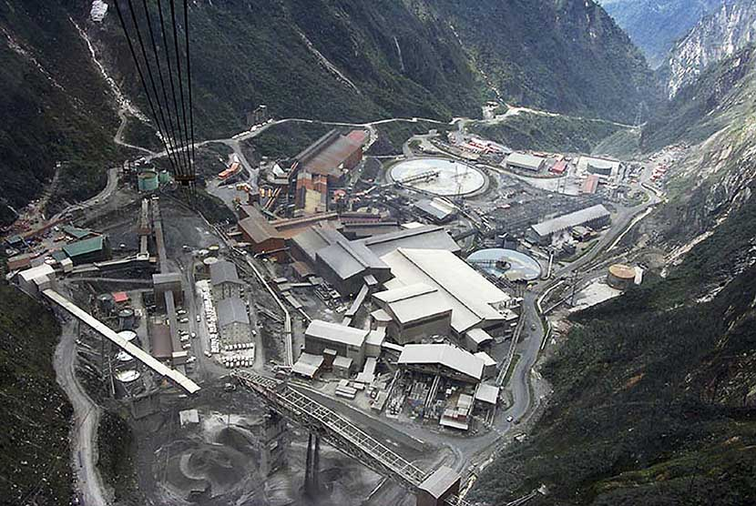
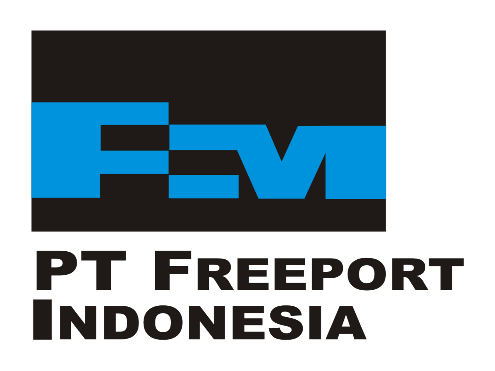

Sejarah

Kabupaten Mimika, Papua, menyimpan sejarah kaya dari masa
pra-kolonial hingga pembentukan administratif pada 2002. Sebelum
kolonisasi Belanda, suku Papua menghuni wilayah ini dengan budaya
mereka yang unik. Pada 1962, Perjanjian New York menyaksikan Papua
Barat beralih ke tangan PBB, lalu bergabung dengan Indonesia pada
1969. Kabupaten Mimika lahir pada 2002, melalui pemekaran dari
Kabupaten Paniai. Kini, wilayah ini terkenal karena tambang emas dan
tembaga Grasberg, menciptakan landasan ekonomi yang kuat. Sejarahnya
mencerminkan dinamika Papua yang kaya, menggabungkan warisan budaya
dengan perkembangan modern.
Sejarah Kabupaten Mimika terus berkembang seiring waktu, dan
perubahan sosial, ekonomi, dan politik terus memengaruhi dinamika
wilayah ini. Perlu dicatat bahwa informasi ini bersifat umum dan
dapat diperbarui seiring dengan perkembangan baru.
Geografis

Kabupaten Mimika, terletak di Provinsi Papua, Indonesia, menawarkan
lanskap geografis yang memukau. Terhampar di pesisir timur Pulau
Papua, wilayah ini menggabungkan pegunungan yang tinggi, hutan hujan
tropis yang lebat, dan pantai yang indah. Gunung Puncak Jaya, salah
satu puncak tertinggi di Oceania, berdiri megah di bagian barat
Kabupaten Mimika. Sementara itu, sungai-sungai mengalir melintasi
dataran rendah, menciptakan kekayaan alam yang luar biasa.
Keberagaman ini memberikan daya tarik tersendiri bagi penjelajah dan
melambangkan keindahan Papua yang tak terlupakan.
Kabupaten Mimika secara administratif terbentuk pada tahun 2002,
hasil pemekaran dari Kabupaten Paniai. Pembentukan ini sejalan
dengan upaya pemerintah untuk mendekatkan pelayanan pemerintahan
kepada masyarakat dan mengelola sumber daya secara lebih efektif.
Tambang
Kabupaten Mimika, Papua, memukau pengunjung dengan keindahan alam
dan warisan budaya yang unik. Pantai-pantai eksotis, seperti Pantai
Hamadi dan Pantai Serui, menawarkan pesona laut yang menakjubkan.
Wisatawan juga dapat menjelajahi kekayaan bawah laut melalui
aktivitas menyelam di sekitar Pulau Mansinam. Pegunungan yang
menjulang, seperti Pegunungan Jayawijaya, menantang para pendaki
dengan pemandangan spektakuler. Sementara itu, budaya suku-suku asli
Papua, seperti suku Dani, memberikan pengalaman autentik melalui
tarian dan upacara tradisional. Kabupaten Mimika adalah destinasi
unik yang memadukan kecantikan alam dengan kekayaan kultural yang
memikat.
Perusahaan

Tambang Grasberg di Kabupaten Mimika, Papua, mencatat sejarah
sebagai salah satu tambang terbesar dan paling produktif di dunia.
Dikelola oleh PT Freeport Indonesia, tambang ini menghasilkan
emas, tembaga, dan perak. Operasinya melibatkan teknologi canggih
dan infrastruktur yang besar, seperti tambang terbuka raksasa dan
sistem pengolahan mineral. Kontribusi ekonominya signifikan bagi
daerah ini dan Indonesia secara keseluruhan. Namun, tambang
Grasberg juga menimbulkan kontroversi, termasuk dampak lingkungan
dan isu-isu sosial. Seiring dengan keberlanjutan pertambangan,
Kabupaten Mimika menjadi pusat perdebatan tentang keseimbangan
antara pembangunan dan pelestarian alam.
Freeport

Memiliki beberapa teleskop, antara lain, Refraktor Ganda Zeiss,
Schmidt Bimasakti, Refraktor Bamberg, Cassegrain GOTO, dan
Teleskop Surya. Refraktor Ganda Zeiss adalah jenis teleskop
terbesar untuk meneropong bintang. Benda ini diletakkan pada atap
kubah sehingga saat teropong digunakan, atap tersebut harus
dibuka. Observatorium Bosscha boleh dikunjungi oleh siapapun,
tanpa tiket. Namun, bagi yang ingin menggunakan teleskop Zeiss,
wajib mendaftarkan diri. Untuk instansi atau lembaga pendidikan,
diberikan jadwal hari Selasa sampai Jumat. Sementara itu,
kunjungan individu dibuka setiap hari Sabtu.